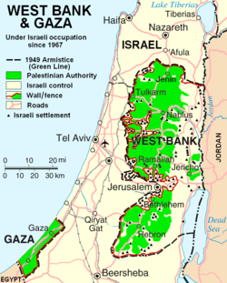

Cursa inarmarilor
.jpg)

Razboaiele arabo-israeliene sunt conflicte militare complexe care au avut loc intre statul Israel si statele arabe vecine, precum si organizatiile palestiniene, in principal in regiunea Orientului Mijlociu. Aceste conflicte au avut loc pe parcursul mai multor decenii si au implicat diferite motive si provocari.
- Razboiul din 1948: Dupa proclamarea independentei Israelului in 1948, mai multe state arabe au invadat teritoriul noului stat, declansand primul razboi arabo-israelian. In spatele acestui conflict s-au aflat tensiunile etnice, teritoriale si religioase, precum si respingerea de catre statele arabe a infiintarii unui stat evreiesc in regiune. In timpul acestui conflict, Uniunea Sovietica a sustinut in principal statele arabe, in timp ce Statele Unite au acordat sprijin Israelului.
- Crisa din Suez (1956): In 1956, Israelul, impreuna cu Franta si Marea Britanie, a intervenit militar in Egipt pentru a prelua controlul canalului Suez, dupa ce presedintele egiptean Gamal Abdel Nasser a nationalizat canalul. Acest conflict a fost, in parte, influentat de rivalitatile din timpul Razboiului Rece, cu Statele Unite si Uniunea Sovietica intervenind diplomatic pentru a-si proteja interesele.
- Războiul de Șase Zile (1967): Acesta a fost un conflict major între Israel și o coaliție de state arabe (Egipt, Iordania și Siria), care a avut loc în 1967. Israelul a câștigat rapid acest război, capturând teritorii cheie, cum ar fi Cisiordania, Fâșia Gaza, Peninsula Sinai și Înălțimile Golan. Războiul de Șase Zile a fost influențat de tensiunile din Războiul Rece, iar Statele Unite și Uniunea Sovietică au fost implicate indirect în sprijinul celor două tabere.
- Razboiul de Yom Kippur (1973): Acest conflict a inceput in 1973, cand Egiptul si Siria au lansat un atac surpriza impotriva Israelului in timpul sarbatorii evreiesti Yom Kippur. Conflictul s-a incheiat cu o victorie strategica a Israelului, dar a avut consecinte semnificative asupra politicii si echilibrului puterii in regiune. In timpul acestui razboi, Statele Unite si Uniunea Sovietica au intervenit pentru a evita o escaladare a conflictului.